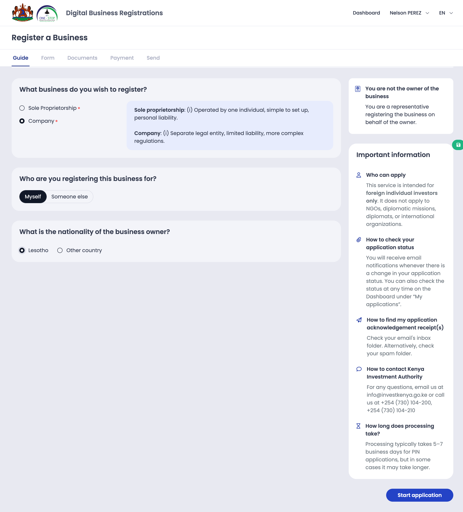

Your step-by-step guide to registering a business through the One Business Service Centre (OBFC) online portal
One Business Service Centre (OBFC)businessregistrations.gov.lsLast updated: February 2026
Welcome — What Is This Service?
If you want to start a business in Lesotho, you're in the right place. The One Business Service Centre (OBFC)
lets you register your business through a single online application — no need to visit multiple offices or fill
out separate forms for different government agencies.
Whether you're opening a small shop as a sole proprietor or forming a company with shareholders, this one
application handles everything: your Business ID, your business licences,
your company incorporation (if applicable), and even your business permit
if you're a foreign national.
What will you get from this process?
Depending on the type of business you're registering, you could receive up to five official documents from a single application:
Business ID
Your unique business identifier — every business gets one
Trading Licence
Required for each trading activity your business carries out
Industrial Licence
Required for manufacturing or industrial activities
Company Incorporation
Official certificate that your company is registered (companies only)
Business Permit
Operating permit for businesses with foreign ownership
How does the process work?
The application is divided into steps, presented as tabs across the top of the screen. You'll
answer a few questions about your business first, and then the system will show you only
the sections that apply to your situation. A sole proprietor will see fewer steps than
someone registering a company. If you're a citizen of Lesotho, you'll see fewer sections than
a foreign national. It's designed to keep things simple by only asking you what's relevant.
Here's the general flow: first you answer the Guide questions, then you fill in your personal
details, then you describe your business, and finally you review and submit. For companies,
there are additional steps in between for shareholders, directors, and company documents.
Good to know
You can save your progress and come back later. You don't have to complete the entire application
in one sitting. Just log back into the portal and your application will be right where you left it.
What do you need to get started?
To begin, you'll need a user account on the OBFC portal. If you don't have one yet, you'll
need to create one first. You'll need a valid email address to register. Once your account is
set up and you've logged in, look for the "Register a Business" service and
click to start a new application.
How long does it take?
The time depends on the type of business and how quickly you can gather your documents. Filling
out the online form typically takes 30 minutes to an hour for a sole proprietor,
and one to two hours for a company (since there's more information to provide).
After you submit, some review steps happen automatically (within minutes), while others require
a government officer to review your application, which may take a few business days.
Who sees what?
Here's a quick overview of what you'll encounter based on your situation:
Sole Proprietor
Business Owner details
Your business information
Review and submit
Business Permit section (only if the owner is a foreign national)
Company
Business Owner details
Company information
Shareholders
Beneficial Owners
Directors and Secretaries
Articles of Association
Incorporation Documents
Review and submit
Business Permit section (only if there is significant foreign ownership)
Before you begin the online application, take a few minutes to gather everything you'll need. Having
these items ready will make the process much smoother and faster. There's nothing worse than getting
halfway through and realising you need to go find a document!
Documents and information everyone needs
A scanned copy of your ID document — either your Lesotho national identity card or your passport. The system accepts common image formats and PDF files.
Your personal details — full legal name, date of birth, gender, nationality, and ID number.
Your contact information — a working phone number and email address. You'll receive notifications about your application by email, so make sure it's one you check regularly.
Your home address — if you live in Lesotho, you'll need to know your district and town. If you live abroad, have your full international address ready.
Your marital status — if you're married, you'll also need your spouse's basic details (name, date of birth, nationality, and ID information).
The name you want for your business — have a couple of options in mind, in case your first choice is already taken.
A clear idea of your business activities — what will your business do? Selling goods? Manufacturing? Providing services? You'll need to select your activities from a list.
Your business address — the physical location of your main office or shop, including the district and town.
Additional items if you're registering a company
Shareholder details — for each shareholder, you'll need their full name, nationality, date of birth, ID document, and information about how many shares they hold.
Director details — every company must have at least one director. You'll need each director's personal information, ID document, and a signed consent letter.
Share capital information — how much total capital will the company have? What type of shares? What is the value per share?
Company secretary details (if appointing one) — their personal information and ID document.
Articles of Association — you can either let the system generate these automatically (recommended) or upload your own custom version prepared by a lawyer.
If any shareholder is another company — you'll need that company's registration number, date of incorporation, and corporate documents.
Additional items for foreign-owned businesses
Investment information — how much are you investing locally? Where is the money coming from?
Staffing plan — how many local and foreign employees do you plan to hire?
A description of how your business benefits Lesotho — this helps with the business permit review.
Certified copies of ID documents and proof of address for beneficial owners.
Tip: Scan your documents ahead of time
Make sure all your documents are scanned clearly and saved as PDF, JPG, or PNG files.
Blurry or hard-to-read scans can delay your application.
The Guide page — answer three questions about your business

After answering, click "Start application" to proceed to the form
The very first thing you'll see when you start a new application is a short set of three questions.
Think of this as the system getting to know you so it can personalise the rest of the application.
Your answers here determine which sections you'll need to fill out.
Question 1: What type of business do you want to register?
This is the most important choice you'll make. It affects almost everything else in the application.
Sole ProprietorCompany
Question 2: Are you the business owner?
Are you registering this business for yourself, or are you filling out this form on behalf of someone else?
Yes, I will be the ownerNo, I am creating this for another person
Question 3: Where is the business owner from?
Is the owner a citizen of Lesotho, or from another country? This determines whether you'll need a business permit.
LesothoOther country
What's the difference between a Sole Proprietor and a Company?
Sole Proprietor
A sole proprietorship is the simplest form of business. It's just you — one person running a business.
You're personally responsible for the business, and there's no legal separation between you and the business.
This is ideal if you're starting small: a shop, a consulting practice, a service business.
The application is shorter — you only need to provide your personal details and your business information.
Company
A company is a separate legal entity. It can have multiple owners (shareholders), directors who manage it,
and its own legal identity separate from the people who own it. This is the right choice if you're
starting a business with partners, want to limit your personal liability, or plan to grow the business significantly.
The application is more detailed — you'll also need to provide shareholder, director, and incorporation information.
How your answers shape the application
If you choose Sole Proprietor, you'll only see the sections for owner details and business information. Quick and straightforward.
If you choose Company, you'll see additional sections for shareholders, beneficial owners, directors, articles of association, and incorporation documents.
If you say "Yes, I will be the owner", some of your personal information will be filled in automatically from your account, saving you time.
If the owner is from another country, a Business Permit section will appear with additional questions about the investment and its benefits to Lesotho.
Once you've answered all three questions, click "Start application". The system will build a personalised
form with only the sections that apply to your situation. You'll see tabs across the top of the screen — each tab
is a step in the process.
The Business Owner tab — your personal details, address, and contact information
This is where you tell us about the person who owns the business. If you said "Yes, I will be the
owner" in the Guide, some of this will already be filled in for you. If you're filling this out for
someone else, you'll need to enter their details.
Your identity
First, you'll upload a scan of your ID document — this can be your Lesotho national
identity card or your passport. Make sure the scan is clear, the text is readable, and all four
corners of the document are visible. The system accepts PDF, JPG, and PNG files.
Tip: Getting a good scan
If you don't have a scanner, you can use your phone's camera. Place your ID on a flat, well-lit
surface and take a photo straight from above. Make sure there's no glare and all the text is sharp.
Many phones also have a "scan document" feature in their camera app that works well.
Then you'll fill in your basic personal information:
Full name — your first name and last name, exactly as they appear on your ID document. Make sure the spelling matches.
Date of birth — select from the date picker
Gender — select from the available options
Nationality — select your country of citizenship from the dropdown list
ID number — the number on your national ID card or passport. Double-check this carefully, as it's used to verify your identity.
Your address
Where do you live? The form will adjust based on your nationality:
If you live in Lesotho: Select your district and town from the dropdown lists, then enter your street address or physical location description.
If you live abroad: Enter your full address, including city, state or region, postal code, and country.
Contact details
Provide a phone number where you can be reached and your email address.
These are important because the system sends notifications about your application to your email, and a
government officer may need to contact you if there are any questions.
Make sure your email is correct
You'll receive updates about your application by email, including when it's approved and when your
certificates are ready. Double-check that you've typed it correctly.
Marital status
Select your marital status from the options provided. If you indicate that you're married,
a few additional fields will appear asking for your spouse's details:
Spouse's full name
Spouse's date of birth
Spouse's nationality
Spouse's ID document type and number
Why do we ask about your spouse?
Under Lesotho law, marital status can affect business ownership rights and obligations.
This information is needed for the legal registration of your business.
Moving to the next step
When you've filled in everything on this page, click the "Next" button at the bottom
to move on to the next tab. If any required fields are missing, the system will highlight them
so you know what still needs to be completed.
Tip: Required fields
Fields marked with an asterisk (*) are required. You won't be able to move to the next step until
all required fields are filled in.
The Company tab — business name, type, share capital, activity, and address
Now it's time to tell us about the business itself. The title of this tab changes depending on
what you chose in the Guide — it will say either "Sole Proprietor" or
"Company". The content also adapts. Let's walk through each part.
Choose your business name
This is an exciting part — choosing the official name for your business! Enter the name you'd
like to use. This is the name that will appear on your official certificates, licences, and all
legal documents.
After typing in your desired name, click the "Check availability" button. The
system will search the entire national business registry to see if that name (or one very
similar to it) is already in use by another business. There are three possible outcomes:
Name is available — great news! You'll see a confirmation message and can proceed with this name.
Name is already taken — someone else has already registered a business with this name. You'll need to choose a different one.
Name is too similar to an existing one — the system may flag names that are very close to existing businesses. This is to avoid confusion in the marketplace.
Tip: Have backup names ready
Popular business names are often already taken. Come prepared with two or three alternative names
just in case your first choice isn't available. Consider adding something unique — your
district name, a descriptive word, or initials — to make the name more distinctive.
Company details (companies only)
If you're registering a company, you'll see some additional fields:
Type of company — select the company type from the dropdown list
Expected annual turnover — your best estimate of how much revenue the business will generate per year
Number of employees — how many people do you plan to hire?
Share capital (companies only)
Companies need to declare their share capital. This is the total amount of money that shareholders
invest in the company. You'll need to provide:
Total share capital — the total value of all shares
Type of shares — most new companies issue ordinary shares
Number of shares — how many shares are being issued
Value per share — the price of each individual share
What is share capital?
Share capital is the money that owners invest in the company in exchange for ownership (shares).
For example, if you create 1,000 shares at M10 each, your total share capital is M10,000.
This money forms the initial funding of the company.
Business activities
This is where you tell us exactly what your business will do. You'll add each activity one at a
time. For each activity:
Click "Add an activity"
Select the sector your activity belongs to (for example: retail trade, manufacturing, food services)
Select the specific activity from the list
The system will automatically determine whether this is a trading or industrial activity and calculate the licensing fee
You can add as many activities as your business will carry out. Each activity may require its own
licence, and the fees will be calculated for you. Don't worry about getting it perfect on the first
try — you can remove an activity and add a different one if you change your mind before submitting.
How fees are calculated
Each business activity has an associated licensing fee. The amount depends on the type of activity
and is set by government regulations. The system calculates these fees automatically as you add
activities, so you'll always know the total cost before you submit your application. You'll see
a running total of all fees at the bottom of the activities section.
Registering a business name for an activity
For each activity, you also have the option to register a separate business name
(sometimes called a "trading as" name). This is optional — you only need it if you want to
operate under a different name for a specific activity. For example, your company might be called
"ABC Holdings" but you want to trade under the name "Sunrise Bakery" for your baking activity.
Main office location
Where is your business located? Provide the address of your main office, shop, or place of business:
Physical address or description of the location
District and town (select from the dropdown lists)
Phone number for the business
Email address for the business
Additional offices or branches
Does your business have more than one location? If you have branch offices, workshops, or other
premises, you can add them here. Click "Add a branch" and fill in the address
details for each additional location.
If your business only operates from one location, you can skip this part.
The Shareholders tab — add each shareholder with their details and share allocation
If you're registering a company, you need to list all the people or organisations that own shares
in the company. Shareholders are the owners of the company — they've invested money in exchange
for a stake in the business. A sole proprietor won't see this section at all, since a sole
proprietorship is owned directly by one person without shares.
Click "Add a shareholder" to begin. You'll add each shareholder one at a time.
For each one, you'll first choose whether they are an individual person or
another company (a corporate shareholder). The information you need to provide
is different for each type.
If the shareholder is a person
For each individual shareholder, you'll provide:
Full name — first name and last name
Nationality
Date of birth
ID document — upload a scan of their ID card or passport
ID number
Address and contact details
If the shareholder is another company
Sometimes companies are owned by other companies. If that's the case, provide:
Company name
Registration number of the shareholder company
Date of incorporation
Country of registration
Corporate documents — upload the relevant registration or incorporation documents
Share allocation
For each shareholder, you'll also need to specify:
Number of shares they hold
Type of shares (usually ordinary shares)
Nominal value of their shares
The system will automatically calculate the percentage of ownership for each shareholder
and show you a running total. The total shares allocated must match the total share capital you declared
in the business information step.
Is this shareholder also a director?
For each shareholder, you can indicate whether they are also a director of the company.
If you tick this option, their details will carry over to the Directors section automatically, saving
you from entering the same information twice.
Tip: Save time on directors
If most of your shareholders are also directors (which is common for small companies), make sure to
check the "Also a director" option for each one. In the Directors step, you can then use the
"Copy directors from shareholders" button to pull all their information in one click.
Check your totals
The total number of shares allocated to all shareholders must equal the total number of shares
you declared in the previous step. The system will flag this if the numbers don't match.
The Beneficial Owners tab — shareholders are listed automatically; add any additional controllers
What is a beneficial owner?
A beneficial owner is a person who has significant control or influence over the company, even
if they're not listed as the official owner on paper. Governments around the world require this
information to ensure transparency and prevent misuse of companies.
In practice, this usually includes:
Any shareholder who owns more than 10% of the shares
Anyone who can exercise significant influence over how the company is run, even without being a shareholder
Anyone who ultimately benefits from the company's profits or assets
The system helps you here
Based on the shareholder information you entered in the previous step, the system automatically
identifies shareholders who own more than 10% and lists them as beneficial owners. You may need to
add additional people if there are others who exercise control.
What you need for each beneficial owner
For each person listed as a beneficial owner, you'll need to provide:
Personal details — full name, date of birth, nationality
A certified copy of their ID document — this means a copy that has been officially certified as authentic
Proof of address — a recent utility bill, bank statement, or similar document showing their residential address
The nature of their control — do they control through shareholding, voting rights, or some other arrangement?
Special cases
If a government body or international organisation is involved in the ownership or control of the
company, additional details will be required about the nature of that involvement. The system
will show you the relevant fields if this applies to your situation.
The Executives tab — directors and company secretary with their details
Every company in Lesotho must have at least one director — the person (or people)
responsible for managing the company's affairs and making decisions on its behalf.
Adding directors
If you already marked some shareholders as directors in the previous step, you can save
time by clicking the "Copy directors from shareholders" button. This will
pull in all their details automatically.
To add a new director (or complete the details for one copied from shareholders), you'll provide:
Full name
Date of birth
Nationality
ID document — upload a scan of their ID or passport
Residential address
Contact details — phone and email
Consent letter — each director must provide a signed letter confirming they agree to serve as a director. Upload the scanned document here.
Powers and authorities
For each director, you can specify what financial decisions they are authorised to make
independently. For example:
Can they sign cheques or authorise payments up to a certain amount?
Can they enter into contracts on behalf of the company?
What is the maximum value of transactions they can approve alone?
This information forms part of your company's official records and helps establish clear governance
from the start.
Company secretary (optional)
You can also appoint a company secretary. While not always mandatory for small
companies, a secretary helps with administrative compliance and record-keeping. The company
secretary is responsible for maintaining official records, filing annual returns, and ensuring
the company meets its legal obligations.
If you choose to appoint one, you'll provide the same type of personal information and ID
document as for directors. The secretary can be one of the directors (wearing two hats, so to
speak), or a separate person entirely.
Tip: Director consent letters
Each director needs to sign a consent letter before the company can be registered. Prepare these
in advance and have them scanned and ready to upload. The letter should clearly state that the
person consents to being appointed as a director of the company, include the company name, and be
signed and dated.
What makes a good director?
A director should be someone you trust to make decisions about the company. They have legal
responsibilities, including acting in the best interests of the company, avoiding conflicts of
interest, and keeping proper financial records. Make sure anyone you nominate as a director
understands these responsibilities.
The Articles of Association tab — choose auto-generated or upload your own
The Articles of Association are the rules that govern how your company operates — things like
how decisions are made, how shares can be transferred, and how meetings are conducted. Think of it
as the rulebook for your company.
You have two options here:
Option A: Use the automatic template (recommended)
The system can generate your Articles of Association automatically based on all
the information you've already provided — your company name, shareholders, directors, share
capital, and so on. This uses a standard template that complies with Lesotho company law.
This is the easiest option and is recommended for most new companies. Simply click the button
to generate the document and review the result.
Option B: Upload your own
If you've had a lawyer prepare custom Articles of Association for your company, you can upload
them here instead. This might be the case if:
Your company has unusual governance arrangements
Shareholders have agreed on specific rights or restrictions
You're setting up a joint venture with particular terms
Your lawyer has recommended specific provisions for your industry
Upload the document as a PDF file. Make sure it's complete, signed where necessary, and complies
with Lesotho company law.
Which option should you choose?
If you're starting a straightforward company and don't have specific legal requirements, the automatic
template is the way to go. It saves time, ensures your articles comply with the law, and is free.
If you have a complex business arrangement or specific requirements, having a lawyer prepare custom
articles is worth the investment. When in doubt, consult a legal professional.
Tip: Review the auto-generated articles
Even if you choose the automatic template, take the time to read through the generated document.
It's your company's rulebook, after all. Understanding what's in it will help you run your company
properly from day one.
The Incorporation Documents tab — memorandum, contributions, and electronic signatures
This section brings together all the information you've entered so far and generates the official
Memorandum of Association — the founding document of your company. This is the
document that, once signed and approved, officially creates the company as a legal entity.
Reviewing the document
Click "Update to latest data" to make sure the document reflects all the
information you've entered throughout the application. The system compiles everything into
one comprehensive document:
Your company name and registered address
The purpose and objectives of the company
Share capital details — total value, number of shares, and value per share
The full list of shareholders with their share allocations
Directors and their details
Any other relevant information from your application
Read through the entire document carefully. This is the legal foundation of your company,
and everything in it needs to be accurate.
Review carefully before signing
Take the time to read through every section of the generated document. If you notice any errors
— a misspelled name, wrong share amounts, incorrect address — go back to the
relevant step and correct the information. Then return here and click "Update to latest data"
to regenerate the document with the corrections.
Signing the document
All shareholders need to sign the Memorandum of Association. You have two ways to do this:
Electronic signing
Each shareholder will receive a verification code by email. They enter this code
into the system to confirm their identity and sign the document electronically. This is the
fastest option, especially if your shareholders are in different locations.
Manual signing
If electronic signing isn't possible, you can print the document, have all shareholders sign
it in person, then scan the signed document and upload it back to the system.
Important acknowledgement
Before proceeding, you'll be asked to acknowledge that you will print and sign the incorporation
documents. This is a legal requirement — you must confirm that all parties have agreed to
the contents of the document.
Tip: Coordinate with your shareholders
If you're using electronic signing, let your shareholders know in advance to check their email.
The verification codes are time-sensitive, so it's best if everyone is ready to sign around the same time.
Describe the strategic nature of the business to the Lesotho economy...
Skills and technology transfer plan
Briefly explain the skills and technology transfer within the next 2 years...
Corporate social responsibility plan
Briefly explain the plan of corporate social responsibility...
← PreviousNext →
The Business Permit tab — foreign investor details, capital, staff, and business case (only for non-Lesotho owners)
This section only appears if the business has foreign ownership. For a sole proprietor, it appears
when the owner is from another country. For a company, it appears when 30% or more of the
shareholders are foreign nationals.
A business permit is the government's way of making sure that foreign investment benefits
Lesotho. Don't worry — it's part of the same application, so you won't need to file separately.
Contact person for the permit
You'll need to nominate a contact person for the business permit application. This
is the person the authorities will reach out to if they have questions. Provide their name, phone
number, and email address.
Investment information
The government wants to understand the financial side of your business. You'll be asked:
How much are you investing locally? — the total amount of money being invested in Lesotho
Where is the money coming from? — personal savings, bank loan, investors, foreign investment, etc.
What assets are you bringing? — equipment, vehicles, machinery, or other tangible assets
Staffing plan
One of the goals of the business permit process is to ensure that foreign businesses create
opportunities for people in Lesotho. You'll need to provide:
How many local employees (Basotho) will you hire?
How many foreign employees will the business need?
For any foreign employees: why is a foreign worker needed for that role? (For example, specialised skills not available locally)
Strategic value to Lesotho
This is your chance to explain how your business will benefit the country. You'll answer questions about:
Economic contribution — how will your business support the local economy? Will it create jobs, generate tax revenue, or support local suppliers?
Skills transfer — will you be training local employees in new skills? Will they gain expertise that benefits the broader workforce?
Social responsibility — does your business plan include any community engagement, environmental considerations, or social impact initiatives?
Tip: Be specific and genuine
When describing the benefits to Lesotho, be concrete. Instead of saying "we'll help the economy," say
"we plan to hire 15 local employees and purchase supplies from Maseru-based vendors." Specific
details strengthen your application.
Why is this information needed?
The business permit process exists to ensure that foreign investment benefits the people of Lesotho.
The government wants to see that your business will create jobs, contribute to the local economy,
and operate responsibly. Being thorough and honest in your answers will help the reviewing officer
make a positive decision on your application.
This section cannot be skipped
If the system has determined that your business requires a permit (based on the ownership nationality
information you provided), all the fields in this section are required. You won't be able to submit
your application without completing them.
The Send tab — declaration, user rights, and submit your application
You've made it to the final step. Before submitting your application, you'll see a summary of
everything you've entered. Take a moment to review it all carefully.
Review your application
The summary page shows all the information from every section you've completed. Scroll through
and check:
Is your personal information correct?
Is the business name right?
Are all activities listed correctly?
For companies: are all shareholders, directors, and share allocations accurate?
Are all required documents uploaded?
If you need to change anything, you can go back to the relevant tab and make corrections.
The declaration
Before you can submit, you must read and agree to a declaration. This is a formal
statement confirming that:
All the information you've provided is true and accurate to the best of your knowledge
You understand that providing false information is a legal offence
You agree to comply with the laws and regulations of Lesotho
Tick the checkbox to confirm that you agree to the declaration.
Payment
Your application includes fees for the various licences and registrations. You'll see a
breakdown of what you owe. You have two ways to pay:
Pay online — use the secure online payment system (powered by iVeri) to pay with a debit or credit card. The payment is processed immediately.
Pay at the counter — if you prefer to pay in person, select the cashier option. You'll need to visit an OBFC office to make the payment before your application can proceed.
Submit your application
Once you've reviewed everything, agreed to the declaration, and made your payment (or selected
the cashier option), click "Submit". Your application will be sent for processing.
After clicking Submit, you'll see a confirmation message on screen. You'll also receive a
confirmation email with a reference number for your application. Keep this
reference number — you can use it to check the status of your application later.
You cannot edit your application after submitting
Once you click Submit, your application enters the review process. If a government officer finds an
issue, they may send it back to you with a request for corrections. But you cannot make changes
on your own after submission. That's why it's so important to review everything carefully before
you click that button.
Tip: Take one last look
Before clicking Submit, consider going back through each tab one more time. Pay special attention
to names, ID numbers, and uploaded documents. A small typo can cause delays if an officer needs
to send the application back for corrections.
After you click Submit, your application doesn't just disappear into a black hole. It goes through
a series of review steps, some automatic and some manual. Here's what happens behind the scenes,
so you know what to expect and aren't left wondering.
The review process is a bit like an assembly line. Your application moves from one stage to the
next, and at each stage, either the system checks something automatically or a government officer
reviews a specific part. Some steps happen in parallel (at the same time), which helps speed
things up.
1
Activity names are checked
The system automatically verifies the business activity names you selected. This is instant
and requires no action from you.
2
Business permit review (if applicable)
If your business requires a permit (because of foreign ownership), a government officer will
review your permit application. They may approve it, ask for more information, or request changes.
You'll be notified by email.
3
Business ID review
An officer reviews your basic business information and validates that everything is in order.
This step confirms your business identity and assigns your unique Business ID number.
4
Licence review
Your trading and/or industrial licence applications are reviewed. The officer checks that your
activities, business location, and other details meet the requirements for each licence.
5
Fee calculation and confirmation
The system calculates the final fees based on your approved activities and confirms the amounts.
If you already paid online, this step processes automatically. If you chose to pay at the counter,
you'll be notified to make your payment.
6
Certificates are generated
Once everything is approved and payment is confirmed, the system automatically generates your
certificates. You'll receive a notification with instructions on how to download them.
Additional step for companies
If you're registering a company, there is an additional review and approval process for the
company incorporation. A Registrar of Companies officer reviews your incorporation
documents, memorandum and articles of association, director consents, and other company-specific
paperwork. This happens alongside the other review steps.
How will you be notified?
You'll receive email notifications at each major step of the process:
When your application is received
When each registration is approved (or if corrections are needed)
When your certificates are ready to download
You can also log into the OBFC portal at any time to check the status of your application.
Some steps are instant, others take time
Automated steps (like activity name checks and certificate generation) happen within minutes.
Manual review steps depend on the workload of government officers and may take a few business days.
Most straightforward applications are processed within one to two weeks.
Once your application is fully approved, you'll receive your official documents. Here's
what to expect based on the type of business you registered:
Everyone receives
Business ID Certificate
Your official business identification number. This is your primary proof that your business is registered in Lesotho.
Depending on your activities
Trading Licence(s)
One for each trading activity you registered. Required to legally carry out that activity.
Industrial Licence(s)
One for each industrial or manufacturing activity you registered.
For companies
Certificate of Incorporation
The official document confirming that your company has been legally created as a separate entity under Lesotho law.
For foreign-owned businesses
Business Permit
Your authorisation to operate a foreign-owned business in Lesotho. This must be renewed periodically.
Tip: Keep your certificates safe
Download and save digital copies of all your certificates. You may also want to print physical copies.
You'll need to present your Business ID certificate and licences when dealing with banks, suppliers,
and government agencies. Some documents may need to be displayed at your business premises.
What to do with your certificates
Once you've received your documents, here are some practical next steps:
Open a business bank account — take your Business ID certificate to a bank to open an account in your business name. Most banks require this document.
Display your licences — trading and industrial licences should be displayed at your place of business, as required by law.
Keep copies with your records — save digital and physical copies in a safe place. You'll need them for various purposes, such as applying for loans, signing contracts with suppliers, or dealing with government agencies.
Note renewal dates — some documents, particularly the business permit and licences, may need to be renewed periodically. Mark the renewal dates in your calendar so you don't miss them.
Don't worry — this is common. When you click "Check availability" and discover the name is taken,
simply try a different name. Consider adding a word that makes it unique, like your district name or
a descriptive word related to your business. For example, if "Sunrise Trading" is taken, try
"Sunrise Trading Maseru" or "Sunrise General Trading."
Can I save my application and come back later?
Yes! Your progress is saved as you go. You can close the browser, and when you log back in,
you'll find your application waiting for you exactly where you left off. This is especially
useful if you need to gather additional documents or consult with your business partners.
What if I make a mistake in my application?
Before you submit, you can go back and change anything. After submission, if a reviewing officer
notices an issue, they can send your application back to you with a note about what needs to
be corrected. You'll receive an email notification and can then log in and make the necessary changes.
How long does the whole process take?
It depends on the type of business and the current workload. A sole proprietorship with local
ownership is the quickest — it could be approved within a few business days. A company with
foreign ownership takes longer because there are more review steps, including the business
permit and company incorporation. In general, expect anywhere from a few days to two weeks.
Do I need a lawyer to register my business?
No, the system is designed so you can do it yourself. The online form guides you through every
step, and for companies, it can even generate your Articles of Association automatically. However,
if you're setting up a complex company structure or have specific legal requirements, consulting
a lawyer is always a good idea.
What types of payment are accepted?
You can pay online using a debit or credit card through the secure iVeri payment system.
Alternatively, you can choose to pay in person at an OBFC office. If you choose to pay at
the counter, your application will be held until the payment is received.
I'm registering a company but I'm the only shareholder. Is that okay?
Yes, Lesotho allows single-shareholder companies. You'll still need to complete the shareholder,
beneficial owner, and director sections, but they'll all refer to you. You can mark yourself
as both the sole shareholder and a director, which speeds things up.
What does "Check availability" do for business names?
When you type in your desired business name and click "Check availability," the system searches
the entire national business registry to see if that exact name (or one very similar to it) is
already in use. If it is, you need to choose something different. If it's available, you'll see
a green confirmation and can proceed.
What happens if my application is rejected?
Outright rejections are rare. More commonly, you'll be asked to make corrections or provide
additional information. The reviewing officer will specify what needs to be changed, and you'll
get a chance to update and resubmit. If there's a fundamental issue (for example, the business
activity is not permitted), the officer will explain the reason clearly.
I'm a foreign national. Do I need a business permit before I can register?
No, the business permit is part of the same application. You don't need to apply for it separately
or get it before starting the registration process. The permit application is simply an additional
section in the same online form. It will be reviewed alongside the rest of your application.
Can I register more than one business activity?
Yes, you can add as many activities as you like. Each activity you add will be evaluated for
licensing, and the system will calculate the fees automatically. You'll receive a separate licence
for each activity (either a trading licence or an industrial licence, depending on the activity type).
What if I want to add activities later, after my business is registered?
You can apply to add new activities to your existing business registration through the OBFC portal.
This is a separate process from the initial registration, but it uses the same online system.
What's the difference between a trading licence and an industrial licence?
A trading licence covers activities related to buying and selling goods or
providing services — for example, running a retail shop, a restaurant, or a consulting
business. An industrial licence covers manufacturing, processing, or
production activities — for example, a factory, a bakery that produces goods for wholesale,
or a construction materials plant. The system determines which type of licence you need based
on the activity you select. You don't need to figure this out yourself.
Can I change my business type later (from sole proprietor to company)?
Converting a sole proprietorship to a company is a separate process that requires a new
registration. It's not something you can change within your existing application. If you think
you might want to form a company in the future, it may be worth starting as a company from
the beginning, even if it requires more paperwork now.
Do I need to be physically present in Lesotho to register?
No. The entire application process is online, so you can complete it from anywhere in the
world as long as you have internet access. However, if you choose to pay at the counter rather
than online, you or someone on your behalf will need to visit an OBFC office in person to
make the payment.
What file formats are accepted for document uploads?
The system accepts PDF, JPG, JPEG, and PNG files. Make sure your scanned
documents are clear and legible. Very large files may take longer to upload, so try to keep
individual files under 5MB if possible. If a scan is blurry or hard to read, it may cause
delays during the review process.
Who can I contact for help?
If you get stuck at any point, you can contact the One Business Service Centre (OBFC) for
assistance. Visit their office in person, call their helpline, or send an email through the
contact information available on the OBFC website at businessregistrations.gov.ls. The staff
are there to help you through the process, especially if this is your first time registering
a business.